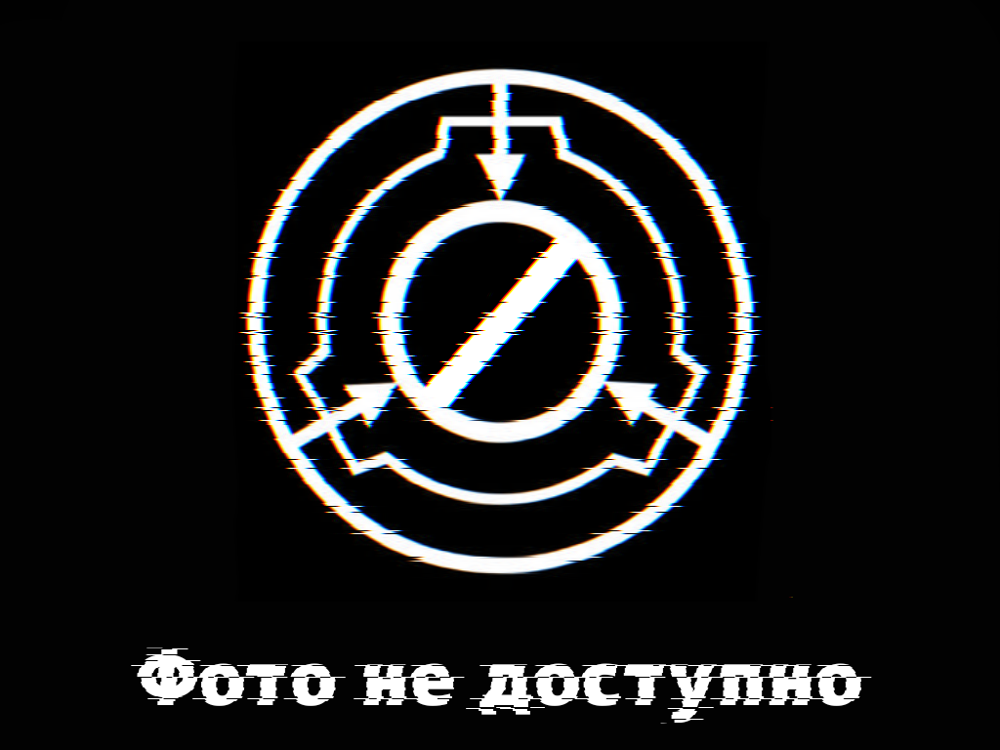

Объект
SCP-106-SP
Класс объекта
Особые условия содержания
SCP-106-SP-1 следует содержать в стандартной камере для объектов класса эвклид размером 16х14х16 метров, не реже одного раза в неделю следует обрабатывать камеру и крайние части структуры раствором миниральных солей, при этом рекомендовано наивысшее доступное содержание минералов, для поддержания безопасности на объекте, все пожарные системы зоны содержания должны быть заправлены тихокеанской морской водой, всему персоналу работающему с объектом запрещено брать с собой любые жидкости кроме минеральной воды марки [УДАЛЕНО], попадание дистиллированной воды в камеру в открытом виде приводит к её моментальной кристализации и изменению химического анализа на схожий с SCP-106-SP-1. В случае неизвестных ранее фонду проявлений аномальных активностей, на объект должно быть не медленно отправлено дежурное подразделение, дежурный по нему, а так же Капитан Шмид.
SCP-106-SP-3 по просьбе его самого следует обозначать в документах доступных ему как Капитан Шмид, а так же требует соответствующего обращение к себе. Рекомендовано проживание SCP-106-SP-3 в комнате-кабинете на расстоянии не менее 20 м от камеры содержания SCP-106-SP-1, но не более 100 м, т.к. SCP-106-SP-3 чувствителен к изменениям объекта и на данном расстоянии способен предупредить инциденты связанные с аномальными активностями объектов. SCP-106-SP-3 должна быть предоставлена возможность посещения спорт-зала, войскового тира комплекса, услуги диетологов фонда, а так же не менее 5 литров миниральной воды марки [УДАЛЕНО] ежедневно. Использование другой воды при изготовлении напитков употребляемых SCP-106-SP-3 СТРОГО ЗАПРЕЩЕНО, об этой информации должно быть доведено всем сотрудникам столовой зоны 37. Соблюдение данных условий оказывает прямое влияние на психическое состояние SCP-106-SP-3, что является залогом поддержания условий содержания всего объекта. Дополнение: SCP-106-SP-3, до операции Бытослон-106 являлся командиром отдела МОГ-37-12, после операции в связи с гибелью всего личного состава отряда, в ходе работы психологов и дальнейшего обсуждения отделом Комитета по этике зоны 37 было утверждено введение фиктивной должности "Начальник службы пространственной безопасности зоны 37" и постановки на эту должность SCP-106-SP-3, при этом сам SCP-106-SP-3, а так же сотрудники без доступа к секретной информации соответствующего уровня, получают измененные версии документов, с вырезанной информацией о том кем на самом деле является SCP-106-SP-3. SCP-106-SP-3 предоставляется стандартное капитанское довольствие подразделений МОГ, в связи с умственными способностями разрешена выдача большей части довольствия долларами Зимбабве, страйкбольный муляж табельного оружия и перемещение по комплексу прописанное в рамках его служебных обязанностей по фиктивной должности, при это должен осуществлятся строгий скрытый контроль СБ, при этом сотрудники СБ заранее инструктируются о поведении "Капитана", подыгрывают ему, и проводят по маршруту регулярного "обхода-инспекции" (соблюдение этих правил стимулирует SCP-106-SP-3 к сохранению лояльности фонду).
Все экземпляры SCP-106-SP-4 полученных при взаимодействии с SCP-106-SP-1 или SCP-106-SP-3 подлежат немедленной ликвидации, SCP-106-SP-4 вышедшие непосредственно из SCP-106-SP-2 при отсутствии враждебности подлежат исследованию научным персоналом и дальнейшей ликвидации. Возможность SCP-106-SP-2 самостоятельно выпускать из себя экземпляры SCP-106-SP-4 свидетельствует о возможном нахождении других выходов-областей SCP-106-SP-1 ещё не найденных фондом.
Обо всех признаках образования розовой слизи и кристалов на поверхностях камер содержания, телах сотрудников или других местах Зоны следует докладывать службе безопасности Зоны. Вещи и сотрудники, оказавшиейся в SCP-106-SP-2, автоматически считаются утерянными / погибшими при исполнении долга, за исключением случаев содействия их возвращению SCP-106-SP-3, любые эксперименты, а так же самостоятельные экспедиции любых лиц за исключением SCP-106-SP-3 в SCP-106-SP-2 должны проводиться под руководством научного сотрудника обладающего полным доступом к объектам класса эвклид и требуют предварительного согласование с начальником комплекса.
Описание
SCP-106-SP-1 Представляет из себя область земли радиусом примерно 10 м не известной глубины, химический анализ почвы каждый раз выдает различные значения, указывающие на уменьшение количества солей, и распологающейся там конструкцией неизвестного происхождения, предоположительно [УДАЛЕНО], конструкция имеет свойства разрастаться со скоростью от 0,01 м/сутки (скорость зависит от соблюдений условий содержания SCP-106-SP-3). Конструкция обладает разной степенью вязкости, в зависимости от удаленности от центра, а так же времени с момента образования наростов. В центре конструкции распологается проход в SCP-106-SP-2
SCP-106-SP-2 представляет из себя область искоженного пространства, состоящего из неньютоновской жидкости высокой степени вязкости, первоначально предпологалось, что данный материал обладает нулевой токсичностью, однако при попадении в клетки организмов через мембрану, в количестве более 1 моль на клетку начинается преобразование организма в SCP-106-SP-4. Ведутся споры о том, что являлось первичным SCP-106-SP-2 или SCP-106-SP-3, однако текущий SCP-106-SP-3 не может дать ответ, а воздействие на разум последнего состоянием всей структуры SCP-106-SP приводит к выводу о взаимозависимости объектов (за исключением SCP-106-SP-4)
SCP-106-SP-3 изначально представлявший "ядро" SCP-106-SP-2 на данный момент, после операции по сдерживанию и ликвидации (см. протокол сдерживания Бытослон-106) его текущим постоянным носителем является Капитан Шмид (см условия содержания). SCP-106-SP-3 при соблюдении условий содержания проявляет лояльность фонду, а так же состоит в дружественных отношениях с начальником комплекса, идёт на контакт с научным персоналом, однако призирает СБ комплекса, т.к. по его словам в последнем крупном нарушении содержаний и последующей гибели его товарищей виновата СБ и их холатное отношение. Основные аномальные свойства SCP-106-SP-3 проявляются при нахождении в непосредственной близости от SCP-106-SP-1 и внутри SCP-106-SP-2 плотность реальности SCP-106-SP-3 на растоянии свыше 20 м от SCP-106-SP-1 составляет 1,05 Юм, что позволяет ему крайне ограничено манипулировать свой-ствами веществ в непосредственной близости, что в том числе проявляется в его умении менять агригатное состояние веществ, однако уже в 10 метрах от SCP-106-SP-1 плотность реальности составляет [УДАЛЕНО], биохимический анализ клеток и тканей SCP-106-SP-3 указал на удивительное состоние клеточной мембраны, что делает затруднительным физические повреждения. При этом физическое уничтожение SCP-106-SP-3 произошедшее при массовом нарушении условий содержаний в зоне 24 привело, с его слов к пересборке его тела в SCP-106-SP-2, при этом значительная часть его внешних человеческих черт была искажена. После данного инцедента объект был полностью перевезён в зону 37. После операции Бытослон-106, а также инцидента в зоне 24 было замечено значительное снижение IQ SCP-106-SP-3, текущее значение которого составляет около [УДАЛЕНО], что соответсвует среднему 10 летнему ребенку, однако в ходе экспериментов выявлено, что объект проявляет крайне высокую тактико-стратегическую подготовку, свойственную бойцам МОГ, что необходимо учитывать при формулировании условий содержания объекта.
SCP-106-SP-4 представляет из себя любой организм в клетки которого попало более 1 моль неизсвестного вещества являющегося состоявляющией SCP-106-SP-1 и SCP-106-SP-2, при попадении в клетки животных, повидение изменяется, точных данных о длительном существовании не известно, все образцы подлежат ликвидации, как правило проявляют агрессию ко всем существам, за исключением SCP-106-SP-3. Анализ клеток и тканей указал на схожесть химобиологических свойств с телом SCP-106-SP-3.